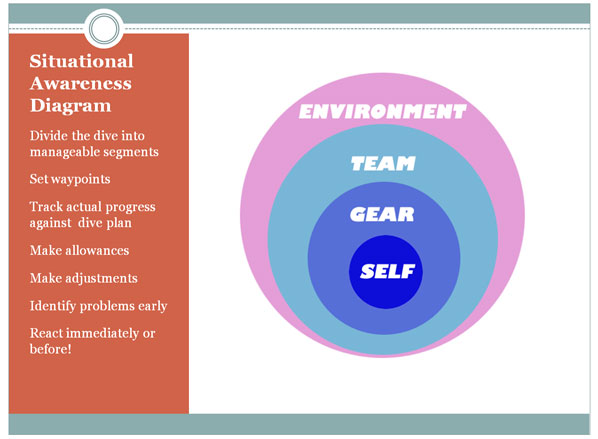
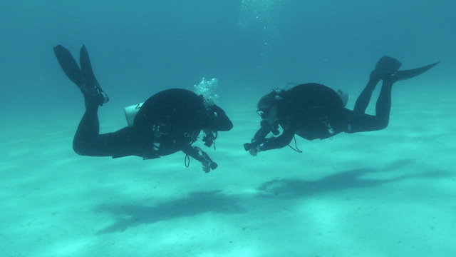

Στις αρχές Οκτώβρη συμμετείχα ως εκπαιδευόμενος στο σχολείο GUE Fundamentals με τους Νίκο Βαρδάκα, Dorota Czerny και Meredith Tanguay!
Στο post αυτό θα προσπαθήσω να μεταφέρω την εμπειρία, τα βιώματα και τις σκέψεις μου για το σχολείο αυτό που με δυο λέξεις κρίνω: φοβερά ενδιαφέρον.
Πριν προχωρήσω στην περιγραφή του σχολειόυ καθεαυτού, είναι μάλλον χρήσιμο αναφέρω μερικά πράγματα για τους Global Underwater Explorers. Και αυτό διότι είναι φυσικό η δομή και το περιεχόμενο του σχολείου να ενσαρκώνουν τη φιλοσοφία του οργανισμού που το δημιουργήσε. Οι GUE γεννήθηκαν ως μια ολιστική προσέγγιση για την αυτόνομη κατάδυση στο πλαίσιο απαιτητικών εξερευνητικών αποστολών σπηλαιοκατάδυσης στη Florida των ΗΠΑ. Πρόκειται για μια παγκόσμια κοινότητα αυτοδυτών, και όχι τόσο για οργανισμό όπως αυτούς που συχνά συναντούμε στο scuba industry. Συχνά λέμε ότι ο σημαντικότερος παράγοντας στην εκπαίδευση των αυτοδυτών είναι ο instructor, και αυτό ισχύει σε μεγάλο βαθμό. Όμως, εξίσου σημαντικός παράγοντας είναι και η φιλοσοφία, η προσέγγιση της οντότητας που βρίσκεται πίσω από τον instructor ή αλλιώς των ανθρώπων που εκπαίδευσαν τον εκπαιδευτή σου.
Επιστρέφω στο σχολείο. Το GUE Fundamentals θέτει πολλαπλούς στόχους για τον εκπαιδευόμενο:
- την επανεξέταση, επαναδιαπραγμάτευση και βελτίωση των θεμελιωδών τεχνικών/ικανοτήτων στην αυτόνομη κατάδυση (πεδιλισμοί, στάση σώματος, ανάδυση, αποσυμπίεση, αντιμετώπιση περιστατικών κοκ)
- γνωριμία και εξοικείωση με μια διαφορετική αντίληψη για την κατάδυση, το λεγόμενο DIR (Doing It Right)
- τη δυνατότητα περαιτέρω εκπαίδευσης σε σχολεία GUE, στο μονοπάτι της τεχνικής κατάδυσης ή σε αυτό της σπηλαιοκατάδυσης
{kind=link}
Το GUE Fundamentals έχει μια κάποια φήμη μεταξύ των δυτών, διότι είναι ένα σχολείο αρκετά διαφορετικό από τα περισσότερα σχολεία αυτόνομης κατάδυσης.
Σε ποια σημεία και με ποιο τρόπο διαφοροποιείται λοιπόν;
-
Ομάδα. Η έννοια της ομάδας κυριαρχεί στη φιλοσοφία και άρα στην εκπαίδευση των GUE. Ο εκπαιδευόμενος καλείται να συμπεριφερθεί μέσα και έξω από το νερό ως μέλος μιας ζωντανής οντότητας, ως κομμάτι μιας καταδυτικής ομάδας. Δεν είναι μόνος με το καταδυτικό του ρολόι ούτε ακολουθεί τυφλά τα πέδιλα του μπροστινού.
Η ομάδα σημαίνει πολλά. Η κατάδυση στο πλαίσιο ομάδας αυξάνει εκθετικά την ασφάλεια του κάθε μέλους. Στο planning αλλά και μέσα στο νερό υπάρχουν περισσότερα μάτια και μυαλά με τους ίδιους στόχους. Η ομάδα μπορεί να μοιραστεί κομμάτι εξοπλισμού όπως το μπαλόνι ή μια επιπλέον μπουκάλα για spare gas κατά την αποσυμπίεση. Οι δύτες που λειτουργούν αποτελεσματικά ως ομάδα και μοιράζονται την ίδια εκπαίδευση, θα μπορέσουν να αντιμετωπίσουν καλύτερα το failure του εξοπλισμού ή μια έκτακτη ανάγκη.
Η κατάδυση με ομάδα σημαίνει ακόμα τη δυνατότητα ανάθεσης διαφορετικών ρόλων/tasks στα μέλη για την αποδοτικότερη λειτουργία του συνόλου: για παράδειγμα στη διαδικασία της ανάδυσης ένα μέλος αναλαμβάνει την τήρηση του χρόνου και του βάθους ενώ ένα άλλο μέλος κάνει deploy μπαλονάκι.
Η ομάδα και η σημασία της είναι διάχυτη καθόλη τη διάρκεια του Fundamentals και είναι, θεωρώ,
μια από τις προκλήσεις που έχει να αντιμετωπίσει ο μαθητευόμενος. Δεν αρκεί να εκτελέσει σωστά
τα drills ατομικά, χρειάζεται να φροντίσει ώστε όλη η ομάδα να είναι συμπαγής και ασφαλής κατά
την εκτέλεση του πλάνου κατάδυσης. Όπως και η πλειονότητα των λοιπών ικανοτήτων το team working φυσικά δεν κατακτιέται στις 4 ημέρες του σχολείου, αλλά είναι κάτι που θέλει διαρκή εξάσκηση. -
Επίγνωση της κατάστασης και του περιβάλλοντος. Είναι μια εξίσου σημαντική ικανότητα την οποία ο μαθητευόμενος καλείται να αναπτύξει και να επιδείξει κατά τη διάρκεια του σχολείου. Στα αγγλικά ο όρος αποδίδεται ως situational awareness. Πρόκειται για την ικανότητα σύνθεσης των ερεθισμάτων που παίρνει ο δύτης κάτω από το νερό, της συνεκτίμησης των ερεθισμάτων αυτών με τον στόχο της κατάδυσης ή την διαδικασία που εκτελείται μια δεδομένη χρονική στιγμή, και της προβολής όλων αυτών σε μελλοντικά ενδεχόμενα. 
Με πιο απλά λόγια, ο δύτης μέλος μιας GUE ομάδας καλείται διευρύνει την αντίληψή του κάτω από το νερό, έχοντας στο μυαλό του όχι μόνο τη συγκεκριμένη διεργασία την οποία εκτελεί, πχ στάση ασφαλείας στα 6m, αλλά και το περιβάλλον, τα συμφραζόμενα μέσα στα οποία εκτελείται η διαδικασία αυτή, πχ πού βρίσκεται η ομάδα του, πού βρίσκεται η γραμμή ανάδυσης, υπάρχει ρεύμα και από ποιά κατεύθυνση, υπάρχει αρκετό αέριο για όλα τα μέλη της ομάδας, έχω οπτική επαφή με όλα τα μέλη της ομάδας, έχω ελέγξει την επιφάνεια στην οποία πρόκειται να αναδυθούμε, για ποιο λόγο ένα μέλος της ομάδας εμφανίζει νευρικότητα κοκ.
Η ανάπτυξη του situational awareness είναι από μόνη της μια πρόκληση για τον αυτοδύτη, είναι μια διανοητική ικανότητα που χρειάζεται πέρα από καθοδήγηση (κατά τη διάρκεια ενός σχολειου) και συνεχή ατομική-ομαδική εξάσκηση. Ένας από τους τρόπους με τον οποίο το Fundamentals κάνει challenge το situational awareness skill του δύτη είναι το task loading σε συνδυασμό με την ανάληψη ρόλων εντός της ομάδας.
Οι βουτιές του σχολείου ξεκινάνε απλά, επιδεικνύοντας και εφαρμόζοντας συγκεκριμένες τεχνικές, πχ frog kick propulsion technique αλλά κάθε επόμενη βουτιά “χτίζεται” πάνω στην προηγούμενη, επομένως ο όγκος της πληροφορίας/τεχνικών κάνει σταδιακά build up. Επιπλέον οι βουτιές δεν είναι στεγνά drills στη σειρά ακολουθώντας ένα εκπαιδευτή. Αντίθετα, κάθε βουτιά έχει συγκεκριμένο πλάνο, το οποίο επικοινωνείται εκ προοιμίου στους μαθητές για να το φέρουν εις πέρας μόνοι τους. Ο μαθητευόμενος αναλαμβάνει το ρόλο του team leader, επομένως αναλαμβάνει όχι μόνο να φέρει εις πέρας τις ασκήσεις, αλλά να επικοινωνήσει το πλάνο υποβρυχίως, να βεβαιωθεί ότι η ομάδα είναι εντάξει και συμπαγής. Πέρα από το team leading, κάθε μέλος της ομάδας οφείλει να έχει συνεχώς επίγνωση του υποβρυχίου περιβάλλοντος, των θέσεων των υπόλοιπων μελών της ομάδας, του σχοινιού ανάδυσης κοκ. Οι βουτιές του σχολείου αποτελούν μικρογραφία πραγματικών βουτιών: προκαταδυτικός έλεγχος εξοπλισμού, έλεγχος για φυσαλίδες κάτω απ’ το νερό, ελεγχόμενη κατάδυση, ελεγχόμενη ανάδυση, deploy σημαδούρας επιφανείας, συν τα όποια drills/εξομοίωση περιστατικών πχ valve drills και gas sharing.
Ενδεικτικά παραθέτω μέρους του πλάνου της τελευταίας βουτιάς (όπως το θυμάμαι):
- GUE EDGE (equipment and plan check) on shore
- bubble check on the shallows
- controlled descent, 3m, 6m, 9m
- valve drill at 9m
- controlled bare ascent
- s-drill at 9m
- controlled ascent while sharing gas
- controlled ascent with SMB
- controlled bare ascent
- unconscious diver lift at 4m
Η παραπάνω βουτιά είναι, προφανώς, πολύ γεμάτη. Τα επιμέρους drills δεν πρέπει να ιδωθούν αποσμασματικά, αλλά ως μέρη ενός πλάνου που χρειάζεται ρυθμό και συνέχεια. Και πρέπει να ληφθεί υπόψιν ότι κατά την εκτέλεση των ασκήσεων αυτών απαιτείται οι μαθητές να έχουν πολλαπλούς παράγοντες στο νου τους: το βάθος, τη στάση του σώματος, τους χρόνους, τη θέση του σχοινιού ανάδυσης, τα αέρια, και γενικώς το πώς εξελίσσονται τα πράγματα.
Κατά τη διάρκεια της βουτιάς, πολλά πράγματα θα ξεφύγουν από την αντίληψη των μαθητών. Και εκεί παρεμβαίνει η/ο instructor για να επισημάνει όχι μόνο μια λάθος τεχνική ή μια παράλλειψη στην άσκηση αλλά, ακόμα πιο σημαντικά, τι έχασε από το context/περιβάλλον.
Η ανάπτυξη του awareness κάτω από το νερό βοηθά τα άτομα και την ομάδα να είναι περισσότερο ασφαλή αλλά και να οργανώνουν βουτιές όντας σε ενεργητικό και όχι παθητικό ρόλο.
Ένας σημαντικός παράγοντας για την ανάπτυξη του awareness υποβρυχίως είναι οι διάφορες διαδικασίες, πχ προετοιμασία και έλεγχος εξοπλισμού, gas sharing, καθάρισμα μάσκας, deploy SMB, να γίνονται αυτόματα και μηχανικά όταν χρειάζεται. Με άλλα λόγια ο αυτοδύτης να αποκτήσει την άνεση και την μυϊκή μνήμη που θα του επιτρέπουν να ανταποκρίνεται σε τετριμμένα tasks χωρίς να σκέφτεται. Όταν γίνει αυτό, υπάρχει περισσότερος χώρος στο “μυαλό” για την επεξεργασία και την εκτίμηση των υπόλοιπων παραγόντων που επηρεάζουν μια βουτιά. 
-
Εξοπλισμός. Οι GUE προωθούν τη λογική των standards, στις διαδικασίες, στα αέρια, στον εξοπλισμό.
Τα standards βοηθούν σημαντικά στη εξοικείωση με ένα αντικείμενο, στην συνενόηση εντός ομάδας,
στη μεγαλύτερη ασφάλεια, στην ανάπτυξη μυικής και μη μνήμης.Ο εξοπλισμός είναι ίδιος ανάμεσα σε όλα τα μέλη της ομάδας. Ο εξοπλισμός των GUE divers, έχει τις
ρίζες του στις εξευρευνητικές αποστολές από τις οποίες κατάγονται οι GUE, με ταυτόχρονη προσαρμογή στις ανάγκες που προέκυπταν με την πάροδο του χρόνου. Ο εξοπλισμός στοχεύει στην απλότητα, την αποδοτικότητα, την ασφάλεια και το σωστό trim του δύτη μέσα στο νερό.Η βάση του εξοπλισμού/configuration χρησιμοποιείται με τον ίδιο τρόπο και ωφελεί τους δύτες είτε
πραγματοποιούν μια κατάδυση αναψυχής στα 15m σε ύφαλο είτε πραγματοποιούν μια βαθιά τεχνική κατάδυση.Δυο κομμάτια εξοπλισμού διαφέρουν σημαντικά και θα αναφέρω εδώ (παρόλο που υπάρχουν και άλλες διαφορές):
-
wing + backplate. Αντίθετα με τα BCD τύπου jacket που έχουνε συνηθίσει, ο εξοπλισμός για
buoyancy control που προωθούν οι GUE είναι ο συνδυασμός μεταλλικού backplate και wing (ασκού). To backplate είναι η βάση πάνω στην οποία κουμπώνει ο υπόλοιπος εξοπλισμός, συμπεριλαμβανομένου του ασκού και της φιάλης. Το backplate μπορεί να πάρει ασκούς διαφόρων μεγεθών, ανάλογα με την φιάλη ή τις φιάλες που θα χρησιμοποιήσει ο δύτης. Η διαφορά του ασκού σε σχέση με το παραδοσιακό jacket είναι ότι αγκαλιάζει την φιάλη και όχι το σώμα του δύτη. Ο συνδυασμός wing+backplate προσφέρει κάποια πλεονεκτήματα όπως απλότητα, προσαρμοστικότητα σε διαφορετικές ανάγκες, καλύτερη κατανομή του αέρα στο BCD και άρα καλύτερη στάση του δύτη υποβρυχίως. Το αρνητικό είναι ότι το wing+backplate έχουν ένα σημαντικό κόστος αγοράς και ταυτόχρονα δεν είναι εξοπλισμός που προσφέρεται για ενοικίαση συνήθως. -
δεύτερο στάδιο με long hose (μακρύ σωλήνα) αντί για χταπόδι. Πρόκειται για ακόμα μια σημαντική διαφοροποίηση στο configuration του εξοπλισμού αλλά και στην πρακτική του gas sharing. Αντί για το κλασικό “χταπόδι” που έχουμε συνηθίσει, τα δεύτερα στάδια στο GUE configuration είναι διαφορετικά. Ο δύτης αναπνέει από το δεύτερο στάδιο που είναι συνδεδεμένο στο long hose ενώ ένα δεύτερο στάδιο με κοντό σωλήνα είναι μόνιμα κρεμασμένο στο λαιμό του δύτη. Σε μια out-of-gas κατάσταση ο donor δύτης θα δώσει στον receiver δύτη το δεύτερο στάδιο από το οποίο αναπνέει (long hose) και αυτός θα αναπνεύσει από αυτό που έχει άμεσα προσβάσιμο στο λαιμό του. Η υπεροχή του συγκεκριμένου configuration γίνεται άμεσα εμφανής στο πρώτο περιστατικό που θα χρειαστεί ο δύτης να δώσει αέρα σε πανικόβλητο δύτη χωρίς αέρα. Ο χρόνος απόκρισης και ευκολία του hose deployment είναι καθοριστικά εκεί.
O standard εξοπλισμός των GUE είναι εξοπλισμός που χρησιμοποιείται ευρέως στην τεχνική κατάδυση, και δεν αποτελεί αποκλειστικότητα των GUE. Το configuration αυτό και παραλλαγές μπορεί να απαντηθούν και ως DIR configuration ή Hogarthian ή απλώς configuration τεχνικής κατάδυσης ή σπηλαιοκατάδυσης.
-
-
Προετοιμασία. Από αυτά που έχω αναφέρει παραπάνω, πρέπει να έχει γίνει σαφές ότι το GUE Fundamentals είναι να απαιτητικό, σωματικά και διανοητικά, σχολείο. Είναι ημέρες “πυκνές” σε καταδυτική πληροφορία και εμπειρία.
Σε αντίθεση με άλλα recreational σχολεία του scuba industry, ο δύτης δε μπορεί να πάει απροετοίμαστος στο Fundamentals. Προκειμένου να εξάγει το μέγιστο όφελος από την 4ημερη αυτή εκπαίδευση είναι σχεδόν επιβεβλημένο να γνωρίζει τι θα αντιμετωπίσει και να κάνει κάτι για αυτό.Στο Fundamentals ο δύτης καλείται να επανεξετάσει και βελτιώσει θεμελιώδεις καταδυτικές πρακτικές και τεχνικές. Οι τεχνικές αυτές, για παράδειγμα πεδιλισμοί ή μπαλονάκι ή στάση σώματος δε μπορούν να βρίσκονται σε βρεφικό στάδιο διότι σκοπός του σχολείου, που προϋποθέτει το Open Water και έναν αριθμό βουτιών, δεν είναι η εκ του μηδενός εκπαίδευση. Ο δύτης λαμβάνει νέες πληροφορίες και feedback για την κατάδυση και έαν διαθέτει μια γόνιμη βάση δεξιοτήτων θα μπορέσει να εξελίξει ακόμα περισσότερο την κάθε
επιμέρους τεχνική.Ταυτόχρονα, ο δύτης οφείλει να έχει μια κάποια εξοικείωση με τον εξοπλισμό που θα χρησιμοποιήσει κατά τη διάρκεια του σχολείου, από το backplate μέχρι τους ρυθμιστές και τα πέδιλα. Η εξοικείωση με τον εξοπλισμό, η ανάπτυξη ενός βαθμού μυικής μνήμης για τον εξοπλισμό, θα επιτρέψει στο δύτη να ασχοληθεί λιγότερο με τα τετριμμένα και να εστιάσει στην σωστή/καλύτερη χρήση ενός εξοπλισμού που γνωρίζει ήδη πώς περίπου λειτουργεί.
Στην πράξη, θεωρώ πολύ καλή ιδέα αρκετούς μήνες πριν τη διεξαγωγή του σχολείου ο δύτης να έχει στη κατοχή του τον απαραίτητο εξοπλισμό και να κάνει όσο δυνατόν περισσότερες βουτιές με αυτόν, αποκτώντας αυτοπεποίθηση στη χρήση του. Για παράδειγμα διατήρηση βάθους κατά την ανάδυση με στεγανή στολή. Επιπλέον, το συνήθως εντατικό πρόγραμμα του σχολείου σε συνδυασμό με το swim test επιβάλλει ο δύτης να βρίσκεται σε καλή φυσική κατάσταση. Εξάλλου, η φυσική κατάσταση στη κατάδυση είναι κάτι που βοηθά μας βοηθά ποικιλοτρόπως, όπως επισημαίνεται και κατά τη διάρκεια των θεωρητικών sessions του σχολείου.
Πολλαπλασιαστικά στα παραπάνω, ήμουν πάρα πάρα πολύ τυχερός διότι το Fundamentals στο οποίο συμμετείχα ήταν ένα σχολείο με 3 GUE εκπαιδευτές, τον Νίκο Βαρδάκα, την Dorota και την Meredith. Και οι 3, και ιδιαίτερα ο Νίκος, συνέβαλαν σε ένα ιδιαίτερα πλούσιο εκπαιδευτικό τετραήμερο μέσα και έξω από το νερό. Αναγνώρισα τη σημασία που έχει για έναν εκπαιδευόμενο η προσοχή στην ποιότητα της εκπαίδευσης, η προσοχή στη λεπτομέρεια, η τεχνική αλλά και η μεταδοτικότητα.
Η δομή του σχολείου, το πώς σταδιακά χτίζεις μια βουτιά πάνω σε δεξιότητες που αθροίζονται, το debriefing με υποβρύχια βίντεο των drills που εκτελείς και σχολιασμός πάνω σε αυτά, το task loading και η ανάγκη να ανταπεξέλθεις σε έντονη διανοητική δραστηριότητα μαζί με την σωματική, ήταν για εμένα μια πολύ ενδιαφέρουσα εκπαιδευτική εμπειρία. Αυτή, σε συνδυασμό με το περιεχόμενο του σχολείου, τους υπολογισμούς των GUE για πλάνο κατάδυσης, βάθη, αέρια, τις διάφορες γνωσιακές λεπτομέρειες για τον εξοπλισμό, το modus operandi, την αποσυμπίεση, το skill refinement αποτελούν ένα σύνολο πρόκληση. Πρόκληση σε τι; Πρόκληση στο να γίνεις καλύτερος δύτης, καλύτερος για εσένα, για την ομάδα σου, για το περιβάλλον, για ένα project στο οποίο μπορείς να βοηθήσεις.
Ευχαριστώ τον Νίκο Βαρδάκα, πρώτα για την εκπαίδευση στο GUE Fundamentals, για τις συζητήσεις και τη βοήθεια πριν το σχολείο, αλλά και για τη παρέα. Ευχαριστώ και τις Dorota και Meredith, που είναι πραγματικά πολύ καλές σε αυτό που κάνουν.
Μη ξεχνάτε πώς ό,τι έγραψα για το σχολείο είναι οι εντυπώσεις και σκέψεις ενός μαθητή που ήρθε πρώτη φορά σε επαφή με αυτό. Μη διστάσετε να έρθετε σε επαφή μια κάποια ή κάποιον GUE instructor, για να συζητήσετε οποιαδήποτε απορία ή προβληματισμό.
Το σχολείο τελείωσε επιτυχώς για μένα (Rec Pass) και πλέον έχω πολλά ερεθίσματα για περαιτέρω εξάσκηση και βουτιές! Είτε κάνοντας drills στο 1ο λιμανάκι είτε στα fun dives, πλέον διαθέτω επιπλέον εφόδια για το ταξίδι στον υδάτινο κόσμο.
Το σχολείο πραγματοποιήθηκε στη Παλαιά Φώκαια Αττικής, στις εγκαταστάσεις του Scubalife. Οι Dorota και Meredith ταξίδεψαν στην Ελλάδα από το εξωτερικό για να πραγματοποιηθεί το σχολείο αυτό.
υστερόγραφο: ευχαριστώ τον Νίκο Καρατζά για την υποστήριξη, την εκπαίδευση και την έμπνευση πριν βρω μπροστά μου το Fundamentals.